Handmade crochet bags & charms — Milano
Bags and personal objects made by hand from fragments, tangled threads and metal. The first piece, The Trace, is in the studio now.
You're on the list. We'll write once — when The Trace is ready.
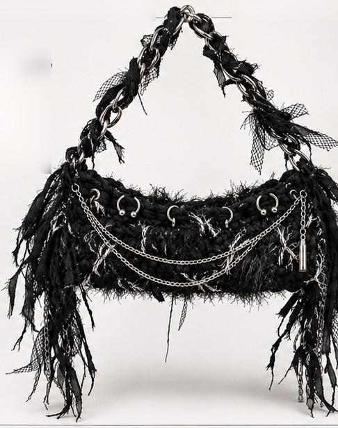
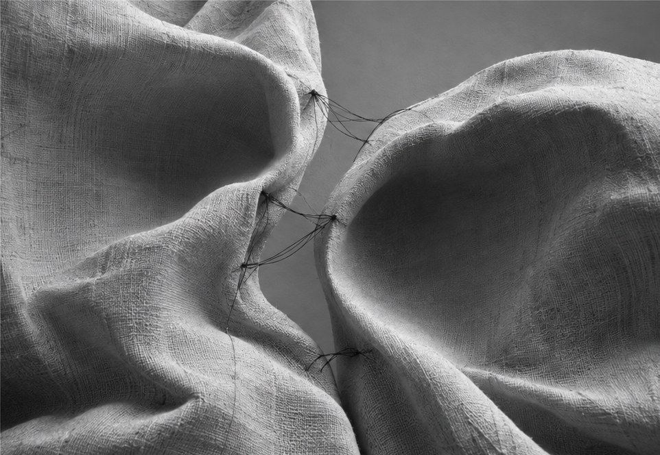
The concept
THE WOUND explores how loss changes our relationship with people, places and ourselves. Born from personal experiences of grief, separation and distance from home, it brings together textile craft, sculpture, cinema and performance.
Fragmented forms, tangled threads and exposed connections give absence a physical presence. Handwork becomes an act of care: joining what remains, and letting it take another shape.
01 / ABSENCE
The space left by someone or something that mattered.
02 / ATTACHMENT
What continues through memory, objects and gestures.
03 / CONTINUATION
Making a life that can hold both loss and possibility.
First drop · Bag 01
A stretched silhouette, marked by metal.
[YOUR PRICE] € · [NUMBER] pieces
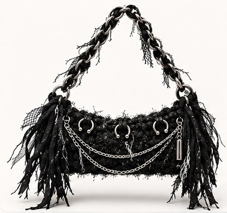
Crocheted by hand in black fettuccia, layered with long-hair and black-and-white yarn for a raw, distressed surface. The chain handle is woven with frayed chiffon, mesh and leather cord. Five horseshoe piercings run along the edge; two chains drape below.
Made one at a time. The fringe, the threads and the drape fall differently on every piece — no two are the same.
Reserve a place in the drop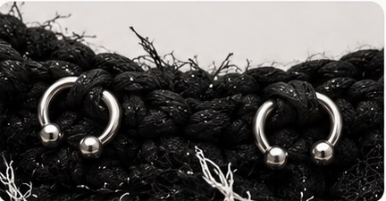
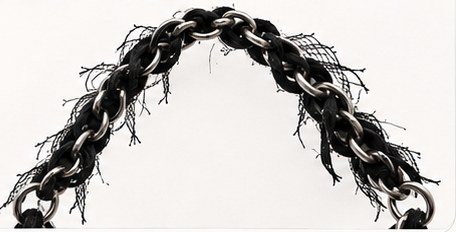
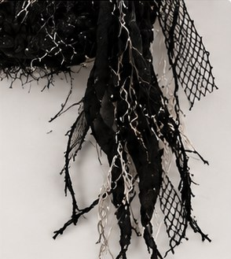
Charms
Small objects. Personal attachments.
Objects to choose, attach and carry — a personal layer added to the bag. Clip them to any bag, keys or belt loop.
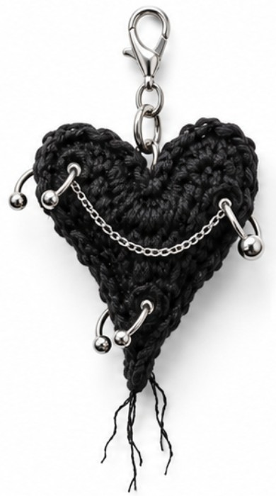
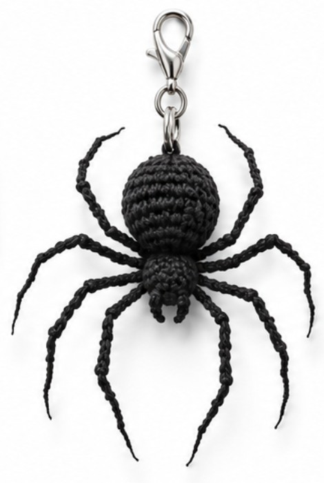
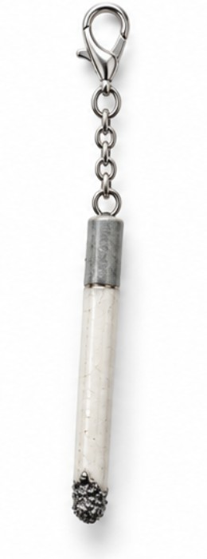
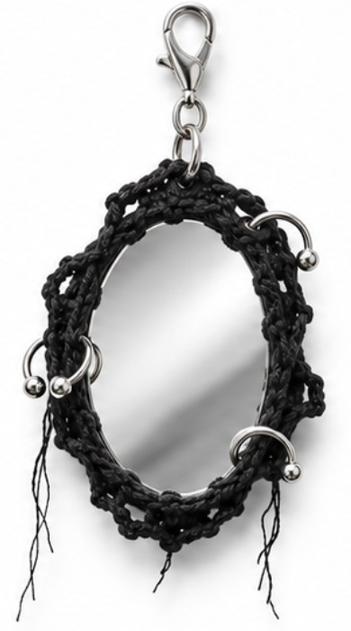
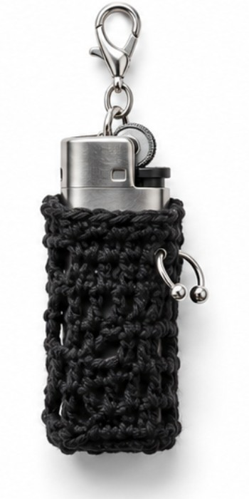
Chosen individually. Carried together.
[YOUR PRICE] € each · Coming with the first drop · Concept renders
From the studio
The materials for The Trace are on their way to Milano, and the first prototype goes on the hook as soon as they land. We test every yarn, stitch and chain for weight, strength and drape before anything goes on sale. Follow the making, stitch by stitch.
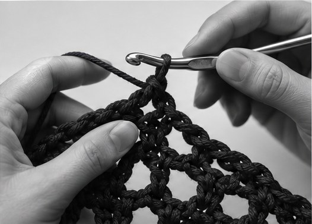
The first drop
Join the waitlist to get first access to The Trace and the Personal Objects charms before they open to everyone. One email when the drop opens — nothing else.
You're on the list. We'll write once — when The Trace is ready.